Como dije, aquí pondré las canciones que te he dedicado y las que tú me dedicaste. También podrás ver la letra solo hundiendo "Lyric". Espero que te guste este apartado. También te voy a dedicar canciones que, en estas últimas semanas, he querido dedicarte. Gracias por todo, Andy, y espero que disfrutes de las canciones. Te amo.
Como primera canción, pondré la canción que tú me dedicaste a mí, que se llama "Serotonina", de Humbe. Esta canción, cuando me la dedicaste, me hizo sentir en lo alto de este mundo. Esta canción es tan especial para mí que, con tan solo escucharla, me hace recordar a ti y se me hace olvidar todos los problemas que tengo. Gracias por dedicarme esta obra maestra y hacerme feliz cada vez que la escucho. Te amo mucho.
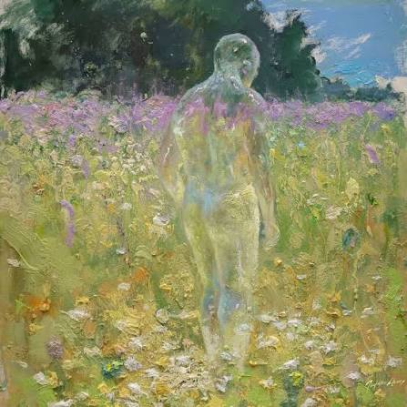
Serotonia
Humbe
Serotonina es lo que liberas en mí
El agua en mis ojitos cuando te sentí
Después de un tiempo, me dan ganas de seguir
A diario encuentro mi razón para vivir
Con solo verte sonreír así
Es la importancia que a veces falta sentir
Cuando la soledad toma el control de mí
Amor se necesita para ser feliz
Pero no de todo eso que hablan en el cine
Es diferente para mí, porque la vida es un chiste
Si no empiezo por amarme a mí, no tendré paz
Un viaje a la nada, quizás
Un crimen que puede costar, se puede evitar
Si me tomo el tiempo y me vuelvo a encontrar, me vuelvo a escuchar
No me va a importar lo que pase al final
Serotonina es lo que liberas en mí
El agua en mis ojitos cuando te sentí
Después de un tiempo, me dan ganas de seguir
A diario encuentro mi razón para vivir
Con solo verte sonreír así
Y todo cambió, no me siento triste
Ya son menos los días grises
Yo sé que todo va a estar bien
El amor que te doy no tiene condición ni límites
Nunca pensé que todo esto era así, que empieza por mí
Por abrazarme me premian, tan sencillo si lo piensan
Lo que la vida me quiera mandar
No voy a negar el sentimiento y la oportunidad
Crecer y cambiar, ya no temerle a opinar
Aunque se pueda acabar el tiempo contigo, nunca está de más
Serotonina es lo que liberas en mí
El agua en mis ojitos cuando te sentí
Después de un tiempo, me dan ganas de seguir
A diario encuentro mi razón para vivir
Con solo verte sonreír así
Esta fue una de las primeras canciones que te dediqué, y con mucha pena hasta te la canté jajaja (no le gustó cómo la canté), y fue "Fuentes de Ortiz", de Ed Maverick. Y te la dediqué principalmente porque habla de lo que siento por ti, de llegar al tal punto de que moriría por ti, y expresaba que cada noche, en serio, cada noche —la neta, todo el día—, pero más por la noche, es donde más pensaba en ti. Cuando me asomaba al balcón y veía la noche, pensaba en ti con un profundo amor hacia ti, tanto que de mi mente nunca salías.
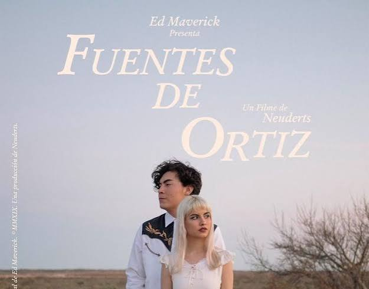
Fuentes de Ortiz
Ed Maverick
Ya dime si quieres estar conmigo O si mejor me voy Tus besos dicen que tú sí me quieres Pero tus palabras, no Y al chile, yo hasta moriría por ti Pero dices que no No eres directa, neta, ya me estás cansando Sé concreta, por favor Y en la noche, en que las estrellas salen Yo pienso en ti, mi amor ¿Qué me hiciste? De mi cabeza, no sales Y no lo digo por mamón Si me dices para ti qué soy No dudaré en hacerte tan feliz Eres especial para mí Dime por qué me haces sufrir Yo te olvidaré desde las Fuentes de Ortiz Soy inseguro cuando dices que me quieres Porque creo que no Como bebé, caigo, pero sí redondito En tu trampa, amor Ya dime si tú me quieres, por favor Ya he sufrido y me he empedado tanto por tu amor Y en la noche, en que las estrellas salen Yo pienso en ti, mi amor ¿Qué me hiciste? De mi cabeza, no sales Y no lo digo por mamón Si me dices para ti qué soy No dudaré en hacerte tan feliz Eres especial para mí Dime por qué me haces sufrir Yo te olvidaré desde las Fuentes de Ortiz
Esta canción es muy especial para mí y una de mis favoritas, y fue una de las razones por las cuales te la dediqué. Además de que eres tú, semejante mujer, no mames. Y su nombre es "Eres", de Café Tacvba. Te la dediqué porque eres lo que más quiero en este mundo, lo primero al levantarme, mi primer pensamiento. Eres tan especial e importante para mí, Andy. Eres mi tiempo, mi salvación, esperanza y fe. Eres todo para mí. Y yo, ¿qué soy? Soy solo un tonto que te ama demasiado y alguien que por ti daría todo. Ese soy.
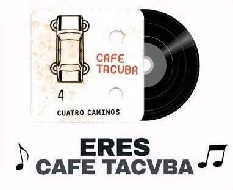
Eres
Café Tacvba
Eres Lo que más quiero en este mundo, eso eres Mi pensamiento más profundo, también eres Tan solo dime lo que hago, aquí me tienes Eres Cuando despierto, lo primero, eso eres Lo que a mi vida le hace falta si no vienes Lo único precioso que en mi mente habita hoy ¿Qué más puedo decirte? Tal vez puedo mentirte sin razón Pero lo que hoy siento Es que sin ti, estoy muerto, pues eres Lo que más quiero en este mundo, eso eres Eres El tiempo que comparto, eso eres Lo que la gente promete cuando se quiere Mi salvación, mi esperanza y mi fe Soy El que quererte quiere como nadie, soy El que te llevaría el sustento día a día, día a día El que por ti daría la vida, ese soy Aquí estoy a tu lado Y espero aquí sentado hasta el final No te has imaginado Lo que por ti he esperado, pues eres Lo que yo amo en este mundo, eso eres Cada minuto en lo que pienso, eso eres Lo que más cuido en este mundo, eso eres
Esta canción se llama "Ojos color sol", de Calle 13. Te la dediqué porque, mírate en un espejo, por Dios, tienes unos ojos divinos. Siempre te he dicho que me gusta mucho todo de ti, pero tus ojos siempre serán mi parte favorita. Tus ojos son mi sol, mis ganas de vivir, la luz que alumbra mi ser. El sol hasta te tiene envidia de lo maravillosos que son tus ojos. Con decirte que, con tan solo verlos, me alegras el alma.
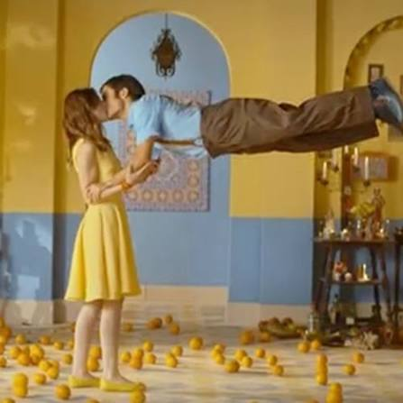
Ojos color sol
Calle 13
Hoy el Sol se escondió y no quiso salir Te vio despertar y le dio miedo de morir Abriste los ojos y el Sol guardó su pincel Porque tú pintas el paisaje mejor que él Cuando amanece, tu lindura Cualquier constelación se pone insegura Tu belleza huele a mañana Y me da de comer durante toda la semana Tus ojos hacen magia, son magos, los abriste Y ahora se reflejan las montañas en los lagos La única verdad absoluta Es que cuando naciste tú A los arboles le nacieron frutas Naranja dulce, siembra de querube Como el Sol tenía miedo se escondió en una nube Hoy el Sol no hace falta está en receso La vitamina d, me la das tú con un beso La Luna sale a caminar siguiendo tus pupilas La noche brilla original después que tú la miras Ya nadie sabe ser feliz a costa del despojo Gracias a ti y a tus ojos Eres un verso en reversa, un riverso Despertaste y le diste vuelta a mi universo Ahora se llega a la cima, bajando por la sierra La tierra ya no gira, tú giras por la tierra En la guerra se dan besos, ya no se pelean Hoy las gallinas mugen y las vacas cacarean Las lombrices y los peces pescan los anzuelos Se vuela por el mar y se navega por el cielo Crecen flores en la arena, cae lluvia en el desierto Ahora los sueños son reales, porque se sueña despierto Y ese sueño es seguro y así se reproduce Y la inocencia por fin no se esconde de las luces La escasez de comida se vuelve deliciosa Porque tenemos la barriga llena de mariposas La galaxia revela su comarca escondida Y en la tierra parece que comienza la vida La Luna sale a caminar siguiendo tus pupilas La noche brilla original después que tú la miras Ya nadie sabe ser feliz a costa del despojo Gracias a ti y a tus ojos En la academia militar enseñan medicina Y los banqueros ahora dan viviendas y comidas Ya nadie sabe ser feliz a costa del despojo Gracias a ti y a tus ojos
Esta canción se llama "Her", de JVKE. Yo se la dediqué porque, antes de conocerte, yo no estaba buscando, solo esperaba que los días pasaran para seguir viviendo y ya. Mi único motivo era tener mucha plata, jejeje (aún lo sigue siendo para cumplirte todos los caprichos que requieran plata). Estaba muerto por dentro, la neta, no muchas cosas me importaban, además de seguir adelante, hasta que te encontré. Le diste más motivos a mi vida, le diste razón, esperanza, fe y me enamoré de ti, y me di cuenta de que solo lo que buscaba era alguien que me abrazara. No cualquier abrazo, uno que se sintiera en el alma, uno como los tuyos.
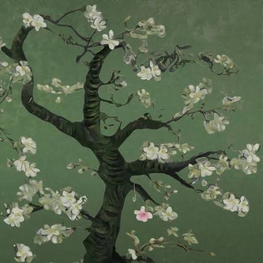
Her
JVKE
(Hold me close) look me dead in my eyes (Dead in my) till the day that I die (Dead inside) I just wanna feel alive (With you, I'm alive) with you, I'm alive Fell in love, but it left me lonely Tried to trust, but it burned me slowly I didn't know what I was looking for Till I found her I found her Without her, I'm a mess (I'm a mess) There was nothing 'bout that love that made sense, I was stressed Till I found her (oh, oh) I've run for many miles trying to find love From a woman that could love me and never leave my side And I've run for many miles trying to get away from The things I'm afraid of and everything inside (and everything inside) You say that we're already done (done) But what does that even mean? You tell me to open my eyes Thank God it was just a dream I guess that's how you know that it's love When you're scared to death they'll leave Just say that you'll never leave, never leave (Baby, hold me close) look me dead in my eyes (Dead in my) till the day that I die (Dead inside) I just wanna feel alive (With you, I'm alive) with you, I'm a—, uh Fell in love, but it left me lonely Tried to trust, but it burned me slowly I didn't know what I was looking for Till I found her I found her Without her, I'm a mess (I'm a mess) There was nothing 'bout that love that made sense, I was stressed Till I found her (oh, oh) Without her, I'm a mess (I'm a mess) There was nothing 'bout that love that made sense, I was stressed Till I found her (oh, oh) Till I found her Ooh-ooh-ooh
(Abrázame fuerte) mírame directo a los ojos (Directo a) hasta el día en que muera (Muerto por dentro) solo quiero sentirme vivo (Contigo estoy vivo) contigo estoy vivo Me enamoré, pero me dejó solo Quise confiar, pero me quemó lentamente No sabía lo que estaba buscando Hasta que la encontré La encontré Sin ella, soy un desastre (soy un desastre) No había nada en ese amor que tuviera sentido, estaba estresado Hasta que la encontré (oh, oh) He corrido muchas millas tratando de encontrar el amor De una mujer que me ame y nunca me deje solo Y he corrido muchas millas tratando de escapar De lo que me da miedo y todo lo que llevo dentro Dices que ya hemos terminado (terminado) Pero, ¿qué significa eso? Me dices que abra los ojos Gracias a Dios solo fue un sueño Supongo que así sabes que es amor Cuando tienes miedo de que se vayan Solo dime que nunca te irás, nunca te irás (Bebé, abrázame fuerte) mírame directo a los ojos (Directo a) hasta el día en que muera (Muerto por dentro) solo quiero sentirme vivo (Contigo estoy vivo) contigo estoy a—, uh Me enamoré, pero me dejó solo Quise confiar, pero me quemó lentamente No sabía lo que estaba buscando Hasta que la encontré La encontré Sin ella, soy un desastre (soy un desastre) No había nada en ese amor que tuviera sentido, estaba estresado Hasta que la encontré (oh, oh) Sin ella, soy un desastre (soy un desastre) No había nada en ese amor que tuviera sentido, estaba estresado Hasta que la encontré (oh, oh) Hasta que la encontré Ooh-ooh-ooh
Esta fue la última canción que te dediqué, llamada "Si tú quieres", de ELEFANTE. Te la dediqué principalmente porque estaba escuchando música rock y, de la nada, me apareció esta canción, que no tenía nada que ver con rock, y ya la iba a quitar hasta que escuché la primera frase: "Te regalo las estrellas". Y me acordé de ti, de cómo yo daría todo por ti sin pedir casi nada a cambio, simplemente tu mirada y tu corazón, y lo que tú me quieras dar, así sea nada. Yo te doy todo lo que soy.
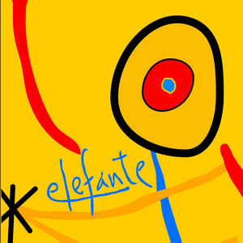
Si tú quieres
Elefante
Te regalo las estrellas Te regalo lo que quieras Te doy todo lo que soy Solo dame una sonrisa Solo dame lo que guardas En tu loco corazón Si tu quieres Te convido de mis días Y te invito a mi guarida Te compongo una cancíon Si tu quieres Caminamos por la vida Nos curamos las heridas Nos bebemos el dolor Y nada me puede pasar Con todo lo que tu me das Y todo puede suceder Si me besaras otra vez Y no te pido nada más Que lo que tu me quieras dar El cielo conocí Y en el cielo quiero vivir Te regalo mis mañanas Te regalo mis palabras Te doy todo hasta mi voz Solo dame tu mirada Solo dame lo que escondes Dentro de ese corazón Si tu quieres Te convido de mis días Y te invito a mi guarida Te regalo esta cancíon Si tu quieres Caminamos por la vida Nos curamos las heridas Nos bebemos el dolor Y nada me puede pasar Con todo lo que tu me das Y todo puede suceder Si me besaras otra vez Y no te pido nada más Que lo que tu me quieras dar El cielo conocí Y en el cielo quiero morir
De esta canción en adelante serán canciones que he pensado a lo largo de la semana para dedicarte, y empiezo con "Chachachá", de Jósean Log. Esta canción la cantaba a todo pulmón cuando estudiaba, era de mis favoritas, y cuando la volví a escuchar, despertó un deseo en mí hacia ti: una noche juntos, bailar un chachachá, mirando las estrellas que se reflejan en tus maravillosos ojos y, de frente a frente, decirte lo mucho que te amo y darte un abrazo, sintiendo que estoy en lo alto del mundo solo porque estoy a tu lado.
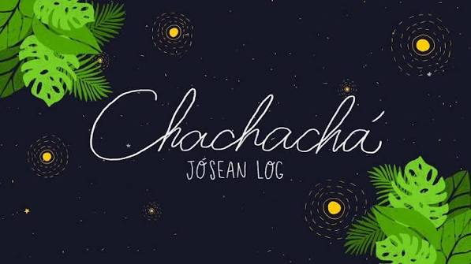
Chachachá
Jósean log
Dame de tu vida y de tu tiempo Suficientes para ver Dentro de tus ojos el momento Que me obligue a renacer Dame vida y dame aliento Que yo ya perdí el conocimiento Solo quédate un momento Hasta evaporarnos en el viento No hay motivos Para decirnos adiós tan pronto Sigo vivo Créemelo, mi amor, no soy tan tonto Si tú quisieras esta noche Ir a bailar un chachachá Yo te puedo enamorar Dame de tu vida y de tu tiempo, ooh Que te quiero conocer Déjame sentir el movimiento, ooh De tu cuerpo al florecer Dame vida y dame aliento Que yo ya perdí el conocimiento Solo quédate un momento (Tan solo un momentito más, mi amor) Hasta evaporarnos en el viento No hay motivos Para decirnos adiós tan pronto Sigo vivo Créemelo, mi amor, no soy tan tonto Si tú quisieras esta noche Ir a bailar un chachachá Yo te puedo enamorar No hay motivos Para decirnos adiós tan pronto Sigo vivo Créemelo, mi amor, no soy tan tonto Si tú quisieras esta noche Ir a bailar un chachachá Yo te puedo enamorar
Esta canción se llama "Something About You" de Eyedress & Dent May. ¿Quién no quisiera estar en un carro conduciendo a tu lado? (Espero que solo yo jajaja). Conduciendo hacia lo desconocido, pero junto a ti, sin prisa ni afanes, porque cuando yo estoy contigo el tiempo se congela. Viendo lo hermosa que eres mientras vamos conduciendo o escuchando música, amaneciendo junto a ti, viendo cómo duermes y sonriendo por semejante belleza que tengo frente a mis ojos, estando en el lugar más seguro, o sea, a tu lado.
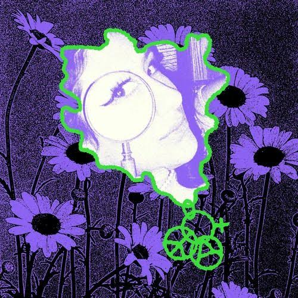
Something about you
Ayedress & Dent May
In the car, cruising around with you And my baby, you know that I got you Hit the road, I'm taking off with you Not in a hurry, there's something about you, oh Leave the car at the valet (cash only) Check me in, pop the champagne (Dom Perignon) Pour me a glass, she's got good taste (so good) Take off our clothes by the fire place (sexy, yeah) She looks just like a dream The prettiest girl I've ever seen From the cover of a magazine In the car, cruising around with you And my baby, you know that I got you Hit the road, I'm taking off with you Not in a hurry, there's something about you, oh We stayed up all night and slept till noon It's so nice to wake up next to you Let's start the day with breakfast in bed Think I'm gonna love you till I'm dead I can't wait to buy you things A brand new diamond ring This is more than just a fling In the car, cruising around with you And my baby, you know that I got you Hit the road, I'm taking off with you Not in a hurry, there's something about you, oh There's something about you, girl There's something about you, oh Something about you Something about
En el carro, manejando contigo cerca Y mi nena, sabes que estoy para ti Golpeando la carretera, me voy contigo No hay prisa, porque hay algo en ti, oh Dejo el carro en el valet (solo efectivo) Regístrame, abre esa champaña (Dom Perignon) Sírveme un vaso, ella tiene buen gusto (muy bueno) Quitarte tu ropa cerca de la chimenea (sexy, sí) Ella luce como un sueño La chica más linda que he visto De una portada de revista En el carro, manejando contigo Y mi nena, sabes que estoy para ti Echando a la carretera, me voy contigo No hay prisa, porque hay algo en ti, oh Nos quedamos despiertos toda la noche y dormimos hasta el mediodía Es muy bello amanecer junto a ti Vamos a empezar el día con el desayuno en cama Pienso que te voy a amar hasta que muera No puedo esperar para comprarte cosas Un nuevo anillo de diamantes Esto es más que una aventura En el carro, manejando contigo Y mi nena, sabes que estoy para ti Echando a la carretera, me voy contigo No hay prisa, porque hay algo en ti, oh Hay algo sobre ti, nena Hay algo sobre ti, oh Algo sobre ti Algo sobre
Esta canción se llama "Bajo el agua", de Manuel Medrano. Esta canción es muy hermosa (como la que está leyendo esto; bueno, la que está leyendo esto es mucho más hermosa). Yo quiero estar contigo, caminar contigo, quiero volar contigo. Tú me diste vida, mucha más vida de la que tenía, cambiaste mi destino, me diste motivos para lograr cualquier cosa siempre cuando esté a tu lado, me diste motivo para amarte por siempre.
Quiero volar contigo Muy alto en algún lugar Quisiera estar contigo Viendo las estrellas sobre el mar Quiero encontrar otro camino Ponerme mi vestido y salir a caminar contigo Quiero decirle al mundo que no somos amigos Decirle a la tristeza que no se cruce en mi camino Quiero volar contigo Muy alto en algún lugar Quisiera estar contigo Viendo las estrellas sobre el mar Quiero encontrar otro camino Ponerme mi vestido y salir a caminar contigo Quiero decirle al mundo que no somos amigos Decirle a la tristeza que no se cruce en mi camino Hoy, porque voy contra la fuerza de un submarino A conquistar a esa dama que tanto juega conmigo Voy por el mundo, solo y sin amigos Voy dando tantas vueltas sin ningún sentido Pero tú, ayer, cambiaste mi destino Me diste vida, mucha más vida que el vino Me diste fuerza en los días fríos Me diste ganas de extrañarte Sin ningún motivo Quiero encontrar otro camino Ponerme mi vestido y salir a caminar contigo Quiero decirle al mundo que no somos amigos Decirle a la tristeza que no se cruce en tu camino Que no se cruce, no Que no se cruce, no Que no se cruce, no
Esta canción se llama "Die With A Smile", de Lady Gaga y Bruno Mars. Te la dedico porque, la neta, ¿quién no quisiera estar a tu lado? Si en un futuro podemos vernos cara a cara, tocarnos las manos, sentirnos mutuamente, siempre estaré donde tú vayas, aunque ahora que lo pienso, casi no te gusta estar muy pegada xd. Bueno, no importa, un metro de distancia para que no te desesperes jajaja. Pero la cuestión es que donde estés, yo voy a estar, así sea apoyándote o solo sentado ahí, acompañándote, abrazándote con todas las ganas que tengo en este momento. Tú significas tanto para mí que, si fuera el fin del mundo, solo quisiera estar sentado a tu lado esperando el fin (aunque sé que estarías con tu hermana o tus seres queridos, pero lo entiendo jajaja). Quiero que sepas que, siempre y cuando me lo permitas, yo, Sergio Polo Musse, estaré a tu lado hasta el final de los tiempos.
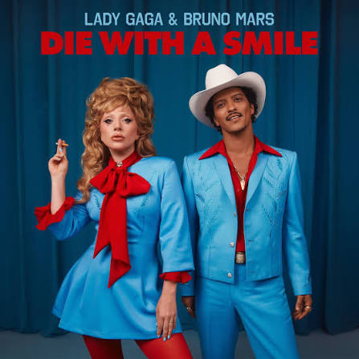
Die with a smile
Lady Gaga y Bruno Mars
I I just woke up from a dream Where you and I had to say goodbye And I don't know what it all means But since I survived, I realized Wherever you go, that's where I'll follow Nobody's promised tomorrow So I'ma love you every night like it's the last night Like it's the last night If the world was ending, I'd wanna be next to you If the party was over and our time on Earth was through I'd wanna hold you just for a while And die with a smile If the world was ending, I'd wanna be next to you Woo-ooh Ooh, lost Lost in the words that we scream I don't even wanna do this anymore 'Cause you already know what you mean to me And our love's the only war worth fighting for Wherever you go, that's where I'll follow Nobody's promised tomorrow So I'ma love you every night like it's the last night Like it's the last night If the world was ending, I'd wanna be next to you If the party was over and our time on Earth was through I'd wanna hold you just for a while And die with a smile If the world was ending, I'd wanna be next to you Right next to you Next to you Right next to you Oh-oh-oh If the world was ending, I'd wanna be next to you If the party was over and our time on Earth was through I'd wanna hold you just for a while And die with a smile If the world was ending, I'd wanna be next to you If the world was ending, I'd wanna be next to you Ooh, ooh I'd wanna be next to you
Yo Acabo de despertar de un sueño En el que tú y yo tuvimos que decir adiós Y no sé qué significa todo esto Pero desde que sobreviví, me di cuenta Donde sea que vayas, ahí es donde iré Nadie tiene garantizado el mañana Así que te amaré cada noche como si fuera la última noche Como si fuera la última noche Si el mundo se estuviera acabando, quisiera estar a tu lado Si la fiesta hubiera terminado y nuestro tiempo en la Tierra hubiera acabado Quisiera abrazarte solo un rato Y morir con una sonrisa Si el mundo se estuviera acabando, quisiera estar a tu lado Uou-ooh Ooh, perdida Perdida en las palabras que gritamos Ni siquiera quiero hacer esto más Porque ya sabes lo que significas para mí Y nuestro amor es la única guerra que vale la pena pelear Donde sea que vayas, ahí es donde iré Nadie tiene garantizado el mañana Así que te amaré cada noche como si fuera la última noche Como si fuera la última noche Si el mundo se estuviera acabando, quisiera estar a tu lado Si la fiesta hubiera terminado y nuestro tiempo en la Tierra hubiera acabado Quisiera abrazarte solo un rato Y morir con una sonrisa Si el mundo se estuviera acabando, quisiera estar a tu lado Justo a tu lado A tu lado Justo a tu lado Oh-oh-oh Si el mundo se estuviera acabando, quisiera estar a tu lado Si la fiesta hubiera terminado y nuestro tiempo en la Tierra hubiera acabado Quisiera abrazarte solo un rato Y morir con una sonrisa Si el mundo se estuviera acabando, quisiera estar a tu lado Si el mundo se estuviera acabando, quisiera estar a tu lado Ooh, ooh Quisiera estar a tu lado
Esta canción te la dedico por lo que me habías dicho, que ya te la habían dedicado. Solo te diré cuáles eran mis motivos por los cuales te iba a dedicar "Congratulations", de Mac Miller. Primero, amor: todo lo que siento por ti, un gran y sincero amor hacia ti. Estoy tan enamorado de ti, mi querida Andy. Hemos pasado por tantas cosas, momentos felices como cuando nos quedábamos hablando chismes del pasado, presente y futuro; excitados, como cuando nuestros gemidos nos decían "te amo"; tristes, como cuando cometí el error; enojado, más yo que tú, cuando jugábamos, pero no quitaba que me estaba divirtiendo; celos que solo eran míos. Tantas cosas hemos pasado juntos que me han hecho enamorarme mucho más de ti, bajones que hemos tenido y míranos, aún seguimos acá, sea como sea, pero aún seguimos juntos (así sea como amigos xd). Cuando tú me mandabas fotos de ti, así sean normales o sexys, mis ojos brillaban por semejante obra maestra. Mis ganas por ti, todo, absolutamente todo me recuerda a una cosa: al color que me diste cuando llegaste a mi vida, azul.
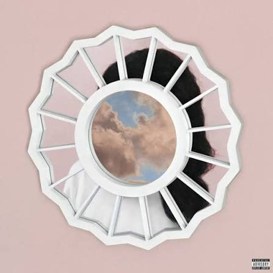
Congratulation
Mac Miller
(Where are you?) Oh-oh, oh-oh The Divine Feminine, an album by Mac Miller Oh-oh, oh-oh (The Divine Feminine) (The Divine Feminine) Am I supposed to? Okay Love Love, love, love, love, love (sex) Love, love, love, love, love (sex) The Sun don't shine when I'm alone I lose my mind and I lose control I see your eyes look through my soul Don't be surprised, this is all I know I felt the highs and they felt like you See, a love like mine is too good to be true And you too divine to just be mine You remind me of the color blue Girl, I'm so in love with you, yeah Girl, I'm so in love with you (Yeah) (Yeah, yeah, yeah, baby) (Yeah, yeah) Um, well Baby, you were everything I ever wanted Bought a wedding ring, it's in my pocket Planned to ask the other day Knew you'd run away So I guess I just forgot it Remember when you went away to college Hours on the phone, we end up talkin' Past, present, future, all the gossip God damn Puppy love ain't what it was darlin' Feelings that we have were so alarmin' I can make you laugh I can break the glass If we made it last, it'd be a bargain Mr. Charmin', that is my department You was there before the fancy cars and You was there when I was just a starvin' artist When the car was havin' trouble startin' Now we got our own apartment Same box for the mail Same hamper for the laundry The food in the fridge is stale And this mornin' you cooked the eggs with the kale I tried to hit it while you was gettin' dressed You said: All you ever think about is sex I'm like, oh well You know me so well And if this will make you late, I swear I won't tell And every time I call your phone You better pick up your cell I swear to God I'ma freak out If it go straight to voice mail Well I'm the jealous type But I swear that ass was Heaven's like When I'm in that pussy it's a better life That's the only way I'm tryna end the night That's my only chance, I better get it right Take your time, my baby Cause I'm waitin' for you, for you And I know I make your mind go crazy But it's all waitin' right here for you, for you You get closer with me, run away All I ever know is the color gray Your loving ways brings me sunshine I found an angel so divine Heaven probably not the same without you But now you're in my world In my world Now Now Now Now Now
(¿Dónde estás?) Oh-oh, oh-oh The Divine Feminine, un álbum de Mac Miller Oh-oh, oh-oh (The Divine Feminine) (The Divine Feminine) ¿Se supone que debo hacerlo? Ok Amor Amor, amor, amor, amor, amor (sexo) Amor, amor, amor, amor, amor (sexo) El sol no brilla cuando estoy solo Pierdo la cabeza y pierdo el control Veo que tus ojos miran a través de mi alma No te sorprendas, eso es todo lo que conozco Sentí los altos y se sintieron como tú Ves, un amor como el mío es demasiado bueno para ser verdad Y eres demasiado divina para ser mía Me recuerdas al color azul Nena, estoy tan enamorado de ti, sí Nena, estoy tan enamorado de ti (Sí) (Sí, sí, sí, mi amor) (Sí, sí) Bueno Nena, eras todo lo que siempre quise Compré un anillo, está en mi bolsillo Tenía pensado preguntar el otro día Pero sabía que te escaparías Así que creo que simplemente lo olvidé Recuerdas cuando te fuiste a la universidad Horas en el teléfono, terminamos hablando Pasado, presente, futuro, todos los chismes Maldita sea El amor lindo no es más lo que era, cariño Los sentimientos que tenemos son alarmantes Puedo hacerte reír Puedo romper el vidrio Si lo hiciéramos durar, sería una ganga El Señor Encantador, ese es mi departamento Estabas conmigo antes de los autos lujosos y Estabas conmigo cuando yo era solo un artista hambriento Cuando el auto no arrancaba Ahora tenemos nuestro propio apartamento El mismo buzón para el correo La misma hierba para lavandería La comida de la nevera está pasada Y esa mañana cocinaste huevos con col rizada Intenté cogerte mientras te estabas vistiendo Tú dijiste: En lo único que piensas es en sexo Estoy como, oh bueno Me conoces tan bien Y si esto te hace llegar tarde, te juro que no lo diré Y cada vez que llame a tu teléfono Será mejor que atiendas tu móvil Juro por Dios, voy a perder la cabeza Si va directo al buzón de voz Bueno, soy del tipo celoso Pero te juro que ese culo es como el cielo Cuando estoy dentro de ti, mi vida es mejor Esa es la única manera que estoy tratando de terminar la noche Es mi única oportunidad, mejor que lo haga bien Toma tu tiempo, mi bebé Porque estoy esperando por ti, por ti Y sé que te vuelvo loca Porque estoy esperando aquí por ti, por ti Te acercas de mí, huye Todo lo que conozco es el color gris Tus modos de amar me traen la luz del sol Encontré un ángel tan divino El cielo probablemente no es el mismo sin ti Pero ahora estás en mi mundo En mi mundo Ahora Ahora Ahora Ahora Ahora
Esta canción se llama "My Kind of Woman", de Mac DeMarco. Esta canción te la quería dedicar desde que te envié el video en el gym cantando esta canción y me dijiste que no me entendías jajaja. Tú eres mi tipo de mujer, Andy. Es algo que yo no estaba buscando, pero por obra de suerte, casualidad o destino, te encontré, encontré mi tipo de mujer. Enséñame tu mundo, enséñame tus sueños, enséñame tus días en que no te sientas bien, los días que te sientes bien, que yo voy a estar ahí, como tú estás cuando estoy cayendo en pedazos y realmente no sé qué te quedas a mi lado, pero te lo agradezco. Agradezco todo lo que haces por mí, te agradezco por ser... mi tipo de mujer.
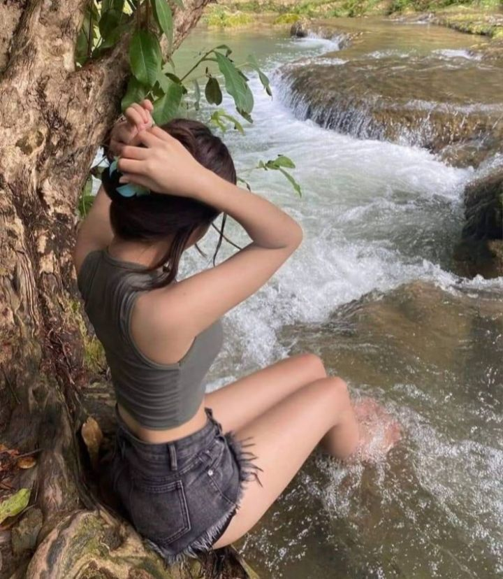
My kind of woman
Mac DeMarco
Oh, baby Oh, man You're making me crazy Really driving me mad That's alright with me It's really no fuss As long as you're next to me Just the two of us You're my, my, my My kind of woman My, oh my What a girl You're my, my, my My kind of woman And I'm down on my hands and knees Begging you, please, baby Show me your world Oh, brother Sweetheart I'm feeling so tired Really falling apart And it just don't make sense to me I really don't know Why you stick right next to me Wherever I go You're my, my, my My kind of woman My, oh my What a girl You're my, my, my My kind of woman And I'm down on my hands and knees Begging you, please, baby Show me your world
Oh, bebé Oh, hombre Me estás volviendo loco Realmente volviéndome loco Pero eso está bien para mí Realmente no es un escándalo Mientras estés a mi lado Solo nosotros dos Eres mi, mi, mi Mi tipo de mujer Mi, oh mi Que chica Eres mi, mi, mi Mi tipo de mujer Y estoy de rodillas Rogándote por favor, cariño Enséñame tu mundo Oh, hermano Cariño Me siento tan cansado Realmente cayendo a pedazos Y simplemente no tiene sentido para mi Realmente no lo sé Por qué te quedas a mi lado A dónde sea que vaya Eres mi, mi, mi Mi tipo de mujer Mi, oh mi Que chica Eres mi, mi, mi Mi tipo de mujer Y estoy de rodillas Rogándote por favor, cariño Enséñame tu mundo
Andy, "Can't Help Falling in Love", de Elvis Presley. No puedo evitar enamorarme de ti, Andy, de tus chistes, de tu forma de querer, de tu voz, de tus ojos, tu cuerpo, de todo de ti. Como un río que fluye hacia el mar, es inevitable no sentir eso. Toma mi mano, Andy, mi tiempo, mis días, mi vida, mi ser, toma todo de mí, que con gusto yo te lo daré, y aun así sentiría que es poco lo que te doy comparado con lo que tú me das. Por eso voy a conseguir poco a poco más cosas para darte más, y no solo en lo material, sino también en lo emocional, mejorar poco a poco para mejorar lo de nosotros, pero aun así me faltaría mucho comparado con lo que tú me das, porque lo que tú me das, o sea, todo tú, es perfección.

Can't help falling in love
Elvis Presley
Wise men say Only fools rush in But I can't help Falling in love with you Shall I stay? Would it be a sin If I can't help Falling in love with you? Like a river flows Surely to the sea Darling, so it goes Some things are meant to be Take my hand Take my whole life too For I can't help Falling in love with you Like a river flows Surely to the sea Darling, so it goes Some things are meant to be Take my hand Take my whole life too For I can't help Falling in love with you For I can't help Falling in love with you
Los sabios dicen Que solo los tontos se precipitan Pero no puedo evitar Enamorarme de ti Si me quedara ¿Sería un pecado? Si no puedo evitar Enamorarme de ti Como un río que fluye Seguro hacia el mar Querida, así es Algunas cosas están destinadas a suceder Toma mi mano Toma mi vida entera también Porque no puedo evitar Enamorarme de ti Como un rio que fluye Seguro hacia el mar Querida, así es Algunas cosas están destinadas a suceder Toma mi mano Toma mi vida entera también Porque no puedo evitar Enamorarme de ti Porque no puedo evitar Enamorarme de ti